Relatório Final - PD-KAFKA-INFRA-LAB
Projeto de Disciplina: Infraestrutura Kafka (Parte Teórica + Parte Prática)
1. Descrição do Projeto e Objetivo
O trabalho foi executado em duas frentes complementares. Na parte teórica, foi projetada uma arquitetura para detecção de fraude em transações de cartão em tempo real, contemplando resposta imediata por blacklist, enriquecimento de dados, inferência de suspeita por ML e estratégia de monitoramento sem ponto único de falha.
Na parte prática, foi implementado um pipeline distribuído com Apache Kafka (3 brokers), Kafka Connect,
Redis, Prometheus e Grafana, com foco no requisito operacional do enunciado: manter no Redis apenas o estado
mais recente de cada entregador, sem duplicidade lógica por driver_id.
- Mensageria: Kafka com tópico compactado.
- Integração: Redis Sink Connector no Kafka Connect.
- Persistência operacional: Redis com chave por entregador.
- Observabilidade: Prometheus + Grafana.
2. Parte Teórica - Detecção de Fraude
Entregue
- Arquitetura proposta para resposta imediata e trilha de ML.
- Casos de uso cobrindo transações legítimas, bloqueadas, suspeitas e reversões.
- Justificativa de tecnologias por camada (streaming, persistência, observabilidade).
- Estrategia de ML, monitoramento e anti-SPOF documentada.
2.1 Diagrama de Arquitetura
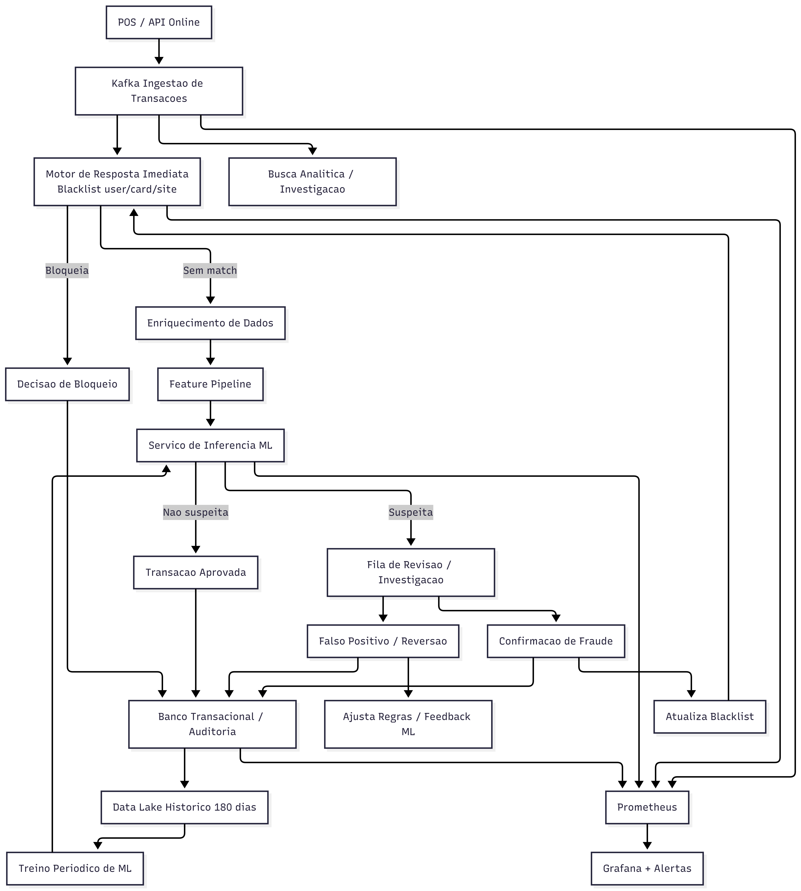
2.2 Referências da Parte Teórica
docs/escopo_projeto.mddocs/parte_teorica/02_casos_de_uso.mddocs/parte_teorica/03_tecnologias_justificativas.mddocs/parte_teorica/04_ml_monitoramento_spof.md
3. Parte Prática - Pipeline Kafka
Implementado e validado
| Item do Enunciado | Status | Resultado | Evidência |
|---|---|---|---|
| Kafka com 3 brokers | OK | Cluster ativo e saudável | A_01 |
| Tópico para último estado | OK | driver-location-state com cleanup.policy=compact |
B_01 |
| Produtor Python com simulador | OK | Publicacao continua com chave driver_id |
D_01 |
| Kafka Connect Sink para Redis | OK | Conector RUNNING com tasks RUNNING | C_01 |
| Estado atual no Redis sem duplicidade | OK | Chaves driver:location:<driver_id> atualizadas no tempo |
E_01, E_02, E_03 |
| Prometheus + Grafana | OK | Dashboard e targets ativos | F_01, F_02 |
| Resiliência com parada de broker | OK | kafka2 parado e recuperado com sucesso |
G_01, G_02 |
4. Evidências Coletadas
4.1 Infraestrutura e Configuracao
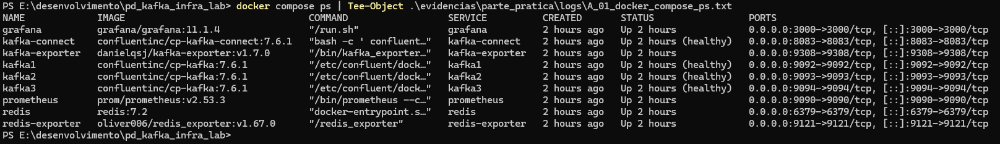
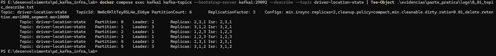
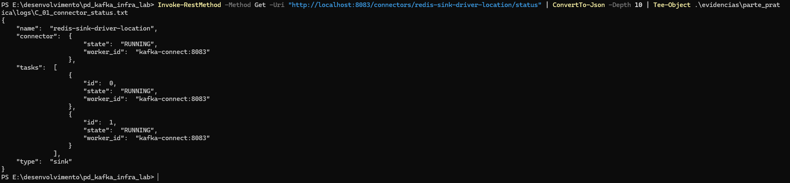
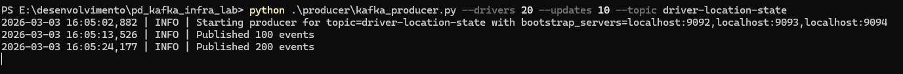
4.2 Validação de Estado no Redis
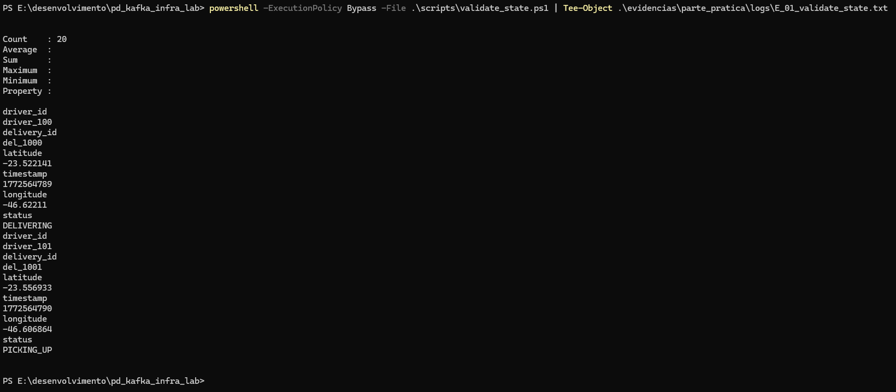
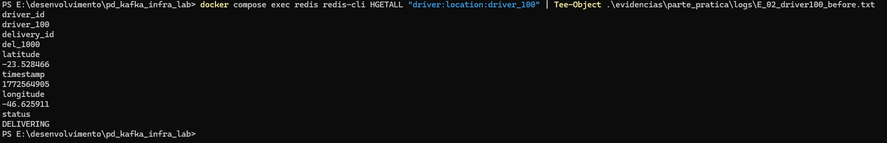
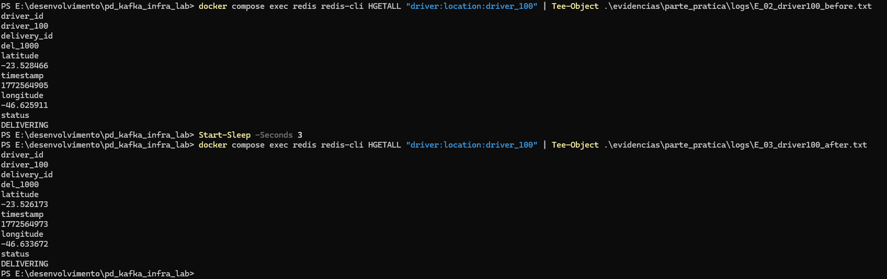
4.3 Monitoramento e Resiliência
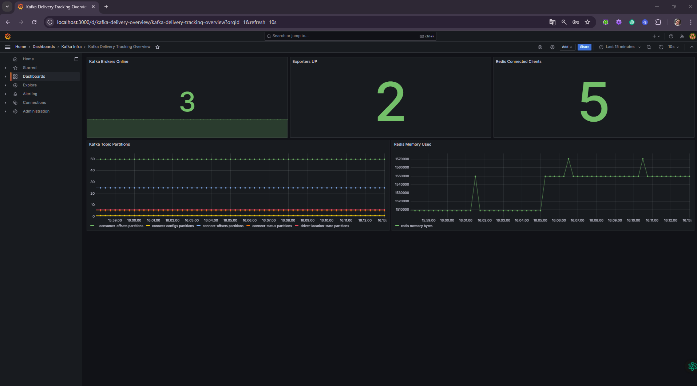
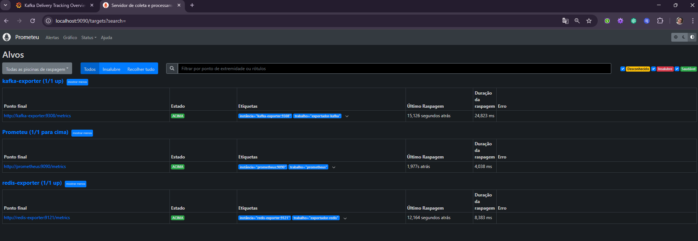
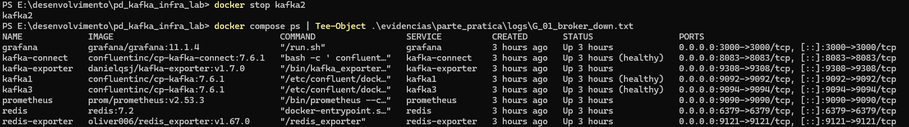
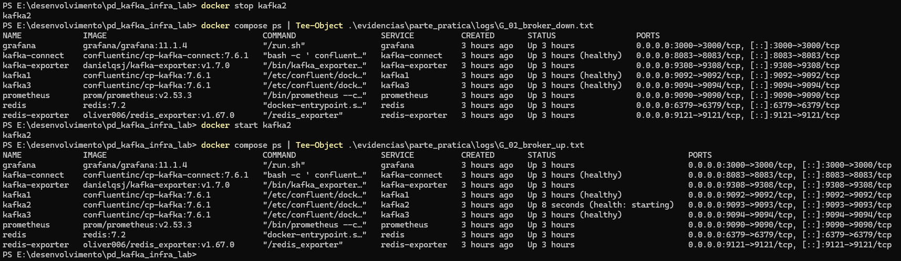
5. Observação sobre o Vídeo
Não entregue
O vídeo explicativo não foi produzido por limitação de infraestrutura local para gravação. Como substituição parcial, foram apresentadas evidências por logs e capturas de tela cobrindo implementacao, validação funcional, monitoramento e resiliencia.
6. Conclusão
- Parte prática implementada e validada com sucesso.
- Parte teórica documentada com escopo, arquitetura, casos de uso, tecnologias e estratégia de ML.
- Entrega organizada para reprodução local e auditoria técnica de evidências.
7. Checklist de Entrega x Enunciado
| Parte | Item Solicitado | Status | Evidência | Observação |
|---|---|---|---|---|
| Teórica | Diagrama de arquitetura | OK | Figura 1 + docs/parte_teorica/imagens/01_diagrama_arquitetura.png | Entregue |
| Teórica | Casos de uso e fluxos | OK | docs/parte_teorica/02_casos_de_uso.md | Entregue |
| Teórica | Tecnologias e justificativas | OK | docs/parte_teorica/03_tecnologias_justificativas.md | Entregue |
| Teórica | Estrategia ML + monitoramento + anti-SPOF | OK | docs/parte_teorica/04_ml_monitoramento_spof.md | Entregue |
| Prática | Kafka com 3 brokers | OK | A_01 | Cluster ativo e saudável |
| Prática | Tópico para último estado (compactação) | OK | B_01 | cleanup.policy=compact |
| Prática | Produtor com schema solicitado | OK | D_01 + codigo produtor | key=driver_id |
| Prática | Kafka Connect Sink para Redis | OK | C_01 | Connector e tasks em RUNNING |
| Prática | Validação de estado sem duplicidade | OK | E_01, E_02, E_03 | Estado atualizado por driver_id |
| Prática | Monitoramento Prometheus + Grafana | OK | F_01, F_02 | Targets e dashboard ativos |
| Prática | Resiliência com parada de broker | OK | G_01, G_02 | Broker parado e recuperado |
| Prática | Vídeo explicativo | NÃO ENTREGUE | Substituído por logs + prints | Limitação de infraestrutura local para gravação |